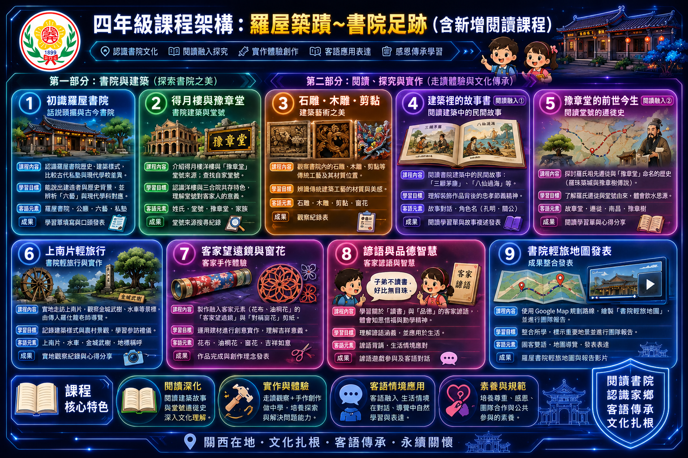

課前小互動：客語與核心概念翻翻卡
點擊卡片翻轉羅屋書院
Ló-vuk Sû-yen
合院兼私塾學堂，代表客家人「耕讀傳家」重視教育的精神。
豫章堂
Yí-chông Thòng
羅氏家族堂號。源於漢代祖先築城植豫章樹，具有飲水思源之意。
得月樓
Tet-ngiet Lèu
書院旁極具歐風之洋樓建築，呈現中西文化並存共榮的美感。
一堂四橫
Yit Thòng Sî Vàng
典型客家合院格局：中間一座正堂（公廳），左右各有兩座橫屋。
單元四新增推薦讀本
建築裡的文化沙龍：羅屋書院雙主題故事導讀
專為四年級開發的深度閱讀教材！點擊右方按鈕即可進入數位精讀，從木雕裝飾的「忠孝節義四格漫畫」讀到羅氏先祖「豫章堂」的萬里遷徙史。
四年級課程架構總覽
點擊放大檢視清晰架構圖
